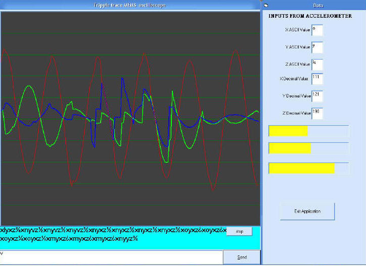
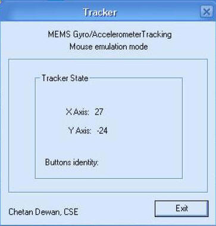
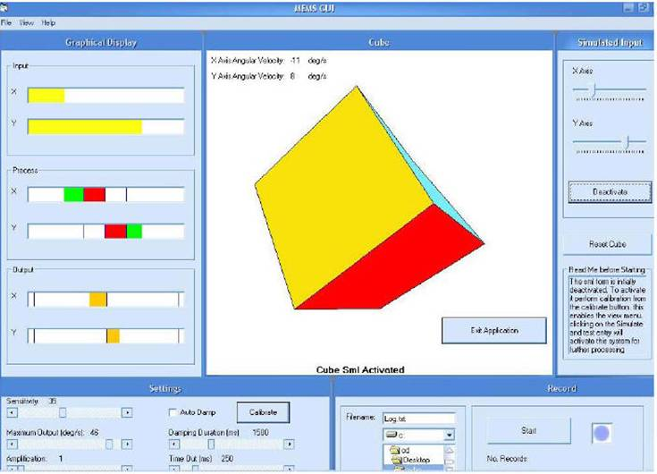
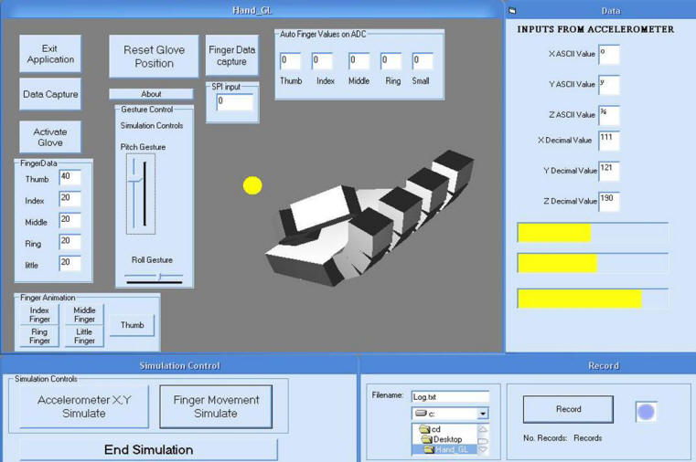
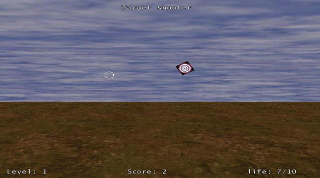
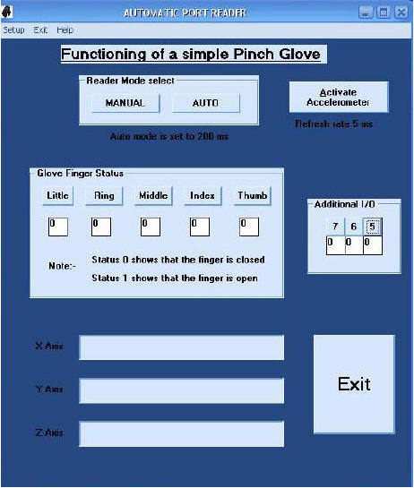

|
Software interface to test our devices (MS Windows only) |
||||
|
Software We implemented several software's to test out our implementations. The choice of development environment was Microsoft Visual Studio as it provides a visual development environment where the debugging is relatively easy. We used a mix match of various languages such as Ansi C, Visual basic and Visual C++ in our implementations. We also tried to C Sharp for some test UI. Since our operating system was primarily Windows XP direct port addressing was not permitted due to layered access control model of the operating system. Therefore either we had to resort to built-in drivers from available windows libraries or write our own drivers using the Windows NT DDK. We managed to get the windows DDK from our MSDNAA site as also most of the development tools. Our initial attempts to write drivers for the serial, parallel and the USB ports was met by failure as we did not have enough experience in writing such drivers and no clear help was available from any quarters. We further explored our development environment of choice and found that an earlier version of Visual Basic had a serial port drive library component which was absent in the later versions of the same product. Why it was removed is not known. We managed to get a kernel mode driver called the buzz driver from the net for parallel port and converted it into a windows DLL library. We also found that there were several other options such as TOTALIO available from Dr Dobbs journal 1999 and GIVEIO an open source, source-forge project. Our search of the net further revealed that TOTALIO was very dangerous to use as it tampered the access control mechanism of the operating system and very often led to unrecoverable system crashes as also hardware damage. The other option was to use GIVEIO. It is a modification of TOTALIO and is somewhat safer than TOTALIO but sometimes does not work with specific motherboards or chip controllers. Therefore we decided to use windows DDK and code available from Jan Axelsons Lakeview Research website to create a widow's driver library of our own. This isused for parallel port I/O if required. For USB we will have to use the chip manufacturer's HID stack and the SDK provided to create a suitable driver. Fortunately for us we managed to get a ready-made driver for the Zigbee implementation from Texas instruments. Data capture utility On going through the documentation of the ZSTAR implementation it was realised that the USB device could emulate a serial port and will send all data through this port to the PC. The ZSTAR implementation can also act as a tilt mouse. To get data from the ZSTAR module commands needed to be sent to the module first and in response to which the ZSTAR implementation will send certain string of data. To validate and see the data and check the response of the accelerometer to change in acceleration in the various axis a GUI was made using Microsoft Mscomm component and VB6. A snapshot of the component created is shown in fig below. A common utility such as a HyperTerminal could have also been used for this purpose but in trying to make our own software we will make our first attempt at actually trying to use this device.  Fig: GUI for testing the ZSTAR implementation Tracking utility The Gyro from Ultragyration emulates a wireless mouse. Gyration technology is based on a tiny embedded gyroscope that can measure the angle and speed of movement to advance a cursor between Point A and B. The unit is programmed with a sophisticated set of patented motion control algorithms, power management features and integration capabilities that allow quick and low cost implementation of motion sensing technology into a range of applications. Advanced units have five degrees of motion sensing freedom -two rotational (gyroscope) axes and three linear (accelerometer) axes - roll and dynamic drift compensation, lower power consumption and fast start up times (20ms). We implemented a small screen tracking utility using code provided in Microsoft Direct X SDK to track motion across a computer screen. A screen shot of this utility is shown in fig below.  Fig: GUI for Mouse mode tracker Cube Simulation We decided to make our first application that will rotate a cube depending on the orientation of the accelerometer. We wanted a GUI to simulate the cube, record data both when simulating using an analog input by means of potentiometer and rotating the cube by the accelerometer. Our application was made in such a manner that change in orientation of accelerometer beyond a certain minimal value isrequired to actually tilt the cube. This was done to compensate for noise induced due to vibration and involuntary movements of the human hand. A calibration control was added to set parameters such as sensitivity to change in orientation, damping the signal automatically, amplification, setting the max output at degree/sec for angular velocity etc was added. Bars were added to visually see the input signal, signal being processesed and the output signal going to the cube simulator. Provision was also provided to manually simulate the cube with the help of sliders which acted as analog potentiometers. This UI was built initially when it was not thought that a 3DOF accelerometer is made available as the 3DOF technology in a single package was relatively new and not easily accessible so a 2DOF simulator was created. It will only mean duplicating the code for an additional axis of the cube. A snapshot of the UI is shown below in fig. The ZSTAR reference design will now be used for simulation of VR hand that will give it orientation information to control and handle virtual objects in say a game or an advanced simulation. The UI uses code from various open source sites with many minor to major modifications. A very large portion of the code was written in house for this simulation. We also stumbled upon libraries which are called source code libraries which provide small snippets of error free code which can be used quite easily. One such library from OverZone software was referred to. A trial ware is available from their website.  Fig: GUI for Cube simulator VR Glove simulation We tried to create a VR glove which when worn by an individual on the hand will mimic the movement of the fingers of the hand in an application which requires object handling and also provide hand orientation movement using MEMS accelerometers. This UI also like the previous UI has a simulation interface and a control interface. With the simulation interface you can manipulate the virtual hand to see its movements in the absence of any signals from external sensors. The fingers are also segmented to provide as close to real fingers movements as possible. It is also possible to increase the number of segments so that the movement become smooth or the implementation can be in such a way the movement is per segment of finger. Textures have not been applied to the hand but can be applied to give a glove or a real hand appearance depending on the application. Knowledge acquired in making the previous applications was used in realising this project and many code parts from previous projects were used leading to code reuse. The basic idea of the hand and code snippet on the movement of the finger was taken from a Spanish website that I did not quite understand, since programs have no language barriers I was able to understand the method used and enhanced the snippet to create a hand with finger movements. Coding for the AVR series of microcontrollers for the kit provided by the embedded systems lab was done in house. Help on code snippets was taken from AVR freaks and other such websites.  Fig: GUI for Virtual hand Shooter game To further our Screen tracker utility we decided to implement a game for use with our virtual weapon interface. For this we used Code snippets from internet and used the tutorials to create this game. The game is a skeet shooter with 10 lives and a number of playable levels. A snapshot of the implementation is appended below in fig.  Fig: Game for VR gun
Pinch Glove implementation Another idea was to try and implement a pinch glove. This is a special low cost variety of VR glove which is rather somewhat easier to implement as the outputs are digital in nature and do not require an elaborate ADC arrangement. This was made in case our ADC implementation on the microcontroller did not work out due to paucity of time, we will have some implementation ready. However for this we will require good quality miniature proximity sensors. The software implementation is shown in fig below. Like the other GUI this also contains a simulator part though with reduced functionality.  Fig: GUI for Pinch Glove |
||||
| Home Downloads Technology Software Hardware Results | ||||